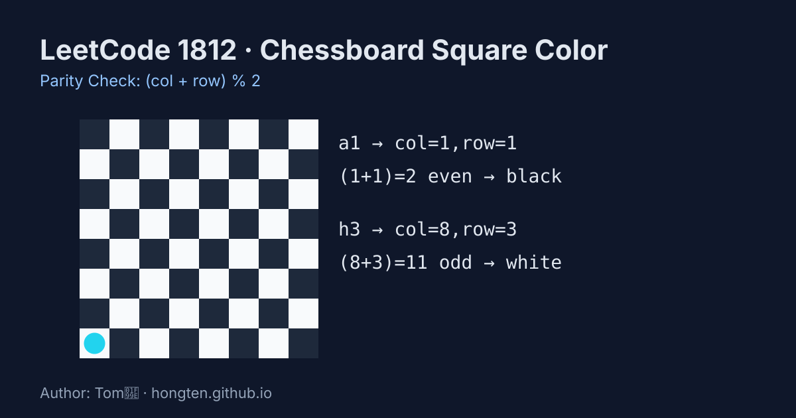

LeetCode 1812: Determine Color of a Chessboard Square (Parity Check)
LeetCode 1812MathParityToday we solve LeetCode 1812 - Determine Color of a Chessboard Square.
Source: https://leetcode.com/problems/determine-color-of-a-chessboard-square/

English
Problem Summary
Given a chessboard coordinate like "a1" or "h3", return true if the square is white, otherwise false.
Key Idea
Convert column letter and row digit to numeric indexes. On a standard board, color alternates every step, so color depends on parity of col + row.
If sum is odd, square is white; if even, square is black.
Algorithm
1) col = coordinate[0] - 'a' + 1
2) row = coordinate[1] - '0'
3) Return (col + row) % 2 == 1.
Complexity
Time O(1), space O(1).
Reference Implementations (Java / Go / C++ / Python / JavaScript)
class Solution {
public boolean squareIsWhite(String coordinate) {
int col = coordinate.charAt(0) - 'a' + 1;
int row = coordinate.charAt(1) - '0';
return ((col + row) & 1) == 1;
}
}func squareIsWhite(coordinate string) bool {
col := int(coordinate[0]-'a') + 1
row := int(coordinate[1] - '0')
return (col+row)%2 == 1
}class Solution {
public:
bool squareIsWhite(string coordinate) {
int col = coordinate[0] - 'a' + 1;
int row = coordinate[1] - '0';
return ((col + row) & 1) == 1;
}
};class Solution:
def squareIsWhite(self, coordinate: str) -> bool:
col = ord(coordinate[0]) - ord('a') + 1
row = int(coordinate[1])
return (col + row) % 2 == 1var squareIsWhite = function(coordinate) {
const col = coordinate.charCodeAt(0) - 97 + 1;
const row = coordinate.charCodeAt(1) - 48;
return ((col + row) & 1) === 1;
};中文
题目概述
给你一个国际象棋坐标（例如 "a1"、"h3"），若该格子是白色返回 true，否则返回 false。
核心思路
把列字母和行数字映射为数字坐标。棋盘颜色交替出现，因此颜色只由 col + row 的奇偶性决定。
和为奇数是白格，和为偶数是黑格。
算法步骤
1）col = coordinate[0] - 'a' + 1
2）row = coordinate[1] - '0'
3）返回 (col + row) % 2 == 1。
复杂度分析
时间复杂度 O(1)，空间复杂度 O(1)。
参考实现（Java / Go / C++ / Python / JavaScript）
class Solution {
public boolean squareIsWhite(String coordinate) {
int col = coordinate.charAt(0) - 'a' + 1;
int row = coordinate.charAt(1) - '0';
return ((col + row) & 1) == 1;
}
}func squareIsWhite(coordinate string) bool {
col := int(coordinate[0]-'a') + 1
row := int(coordinate[1] - '0')
return (col+row)%2 == 1
}class Solution {
public:
bool squareIsWhite(string coordinate) {
int col = coordinate[0] - 'a' + 1;
int row = coordinate[1] - '0';
return ((col + row) & 1) == 1;
}
};class Solution:
def squareIsWhite(self, coordinate: str) -> bool:
col = ord(coordinate[0]) - ord('a') + 1
row = int(coordinate[1])
return (col + row) % 2 == 1var squareIsWhite = function(coordinate) {
const col = coordinate.charCodeAt(0) - 97 + 1;
const row = coordinate.charCodeAt(1) - 48;
return ((col + row) & 1) === 1;
};
Comments